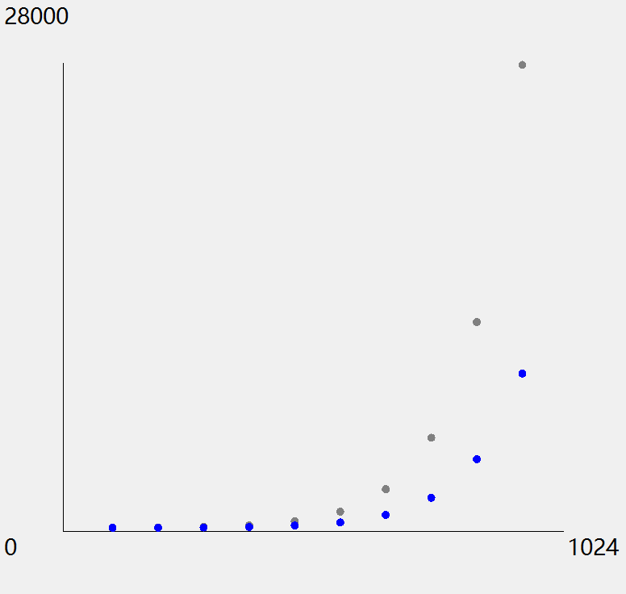

© 2019 《算法（第四版）》C# 题解 | Provided By 沈星繁
搜索解答
目前已完成到 2.5
2.2.6
上次更新：2019-02-11
题目
2.2.6 编写一个程序来计算自顶向下和自底向上的归并排序访问数组的准确次数。 使用这个程序将 N=1 至 512 的结果绘成曲线图，并将其和上限 6NlgN 相比较。
解答
 灰色是上限，蓝点是自顶向下，红点是自底向上。 由于两种排序访问数组的次数是一样的，因此蓝点和红点重合。
代码
给出绘图部分的代码：
using System;
using System.Windows.Forms;
using System.Drawing;
using Merge;
namespace _2._2._6
{
/*
* 2.2.6
*
* 编写一个程序来计算自顶向下和自底向上的归并排序访问数组的准确次数。
* 使用这个程序将 N=1 至 512 的结果绘成曲线图，
* 并将其和上限 6NlgN 相比较。
*
*/
static class Program
{
/// <summary>
/// 应用程序的主入口点。
/// </summary>
[STAThread]
static void Main()
{
Application.EnableVisualStyles();
Application.SetCompatibleTextRenderingDefault(false);
Compute();
Application.Run(new Form1());
}
static void Compute()
{
MergeSort mergeSort = new MergeSort();
MergeSortBU mergeSortBU = new MergeSortBU();
int[] mergeResult = new int[10];
int[] mergeResultBU = new int[10];
int[] upperBound = new int[10];
// 进行计算
int dataSize = 1;
for (int i = 0; i < 10; i++)
{
int[] dataMerge = SortCompare.GetRandomArrayInt(dataSize);
int[] dataMergeBU = new int[dataSize];
dataMerge.CopyTo(dataMergeBU, 0);
mergeSort.ClearArrayVisitCount();
mergeSortBU.ClearArrayVisitCount();
mergeSort.Sort(dataMerge);
mergeSortBU.Sort(dataMergeBU);
mergeResult[i] = mergeSort.GetArrayVisitCount();
mergeResultBU[i] = mergeSortBU.GetArrayVisitCount();
upperBound[i] = (int)(6 * dataSize * Math.Log(dataSize, 2));
dataSize *= 2;
}
// 绘图
Form2 plot = new Form2();
plot.Show();
Graphics graphics = plot.CreateGraphics();
// 获得绘图区矩形。
RectangleF rect = plot.ClientRectangle;
float unitX = rect.Width / 10;
float unitY = rect.Width / 10;
// 添加 10% 边距作为文字区域。
RectangleF center = new RectangleF
(rect.X + unitX, rect.Y + unitY,
rect.Width - 2 * unitX, rect.Height - 2 * unitY);
// 绘制坐标系。
graphics.DrawLine(Pens.Black, center.Left, center.Top, center.Left, center.Bottom);
graphics.DrawLine(Pens.Black, center.Left, center.Bottom, center.Right, center.Bottom);
graphics.DrawString("28000", plot.Font, Brushes.Black, rect.Location);
graphics.DrawString("1024", plot.Font, Brushes.Black, center.Right, center.Bottom);
graphics.DrawString("0", plot.Font, Brushes.Black, rect.Left, center.Bottom);
// 初始化点。
PointF[] grayPoints = new PointF[10]; // 上限
PointF[] redPoints = new PointF[10]; // 自顶向下
PointF[] bluePoints = new PointF[10]; // 自底向上
unitX = center.Width / 11.0f;
unitY = center.Height / 28000.0f;
for (int i = 0; i < 10; i++)
{
grayPoints[i] = new PointF(center.Left + unitX * (i + 1), center.Bottom - (upperBound[i] * unitY) - 10);
redPoints[i] = new PointF(center.Left + unitX * (i + 1), center.Bottom - (mergeResult[i] * unitY) - 10);
bluePoints[i] = new PointF(center.Left + unitX * (i + 1), center.Bottom - (mergeResultBU[i] * unitY) - 10);
}
// 绘制点。
for (int i = 0; i < 10; i++)
{
graphics.FillEllipse(Brushes.Gray, new RectangleF(grayPoints[i], new SizeF(10, 10)));
graphics.FillEllipse(Brushes.Red, new RectangleF(redPoints[i], new SizeF(10, 10)));
graphics.FillEllipse(Brushes.Blue, new RectangleF(bluePoints[i], new Size(10, 10)));
}
graphics.Dispose();
}
}
}